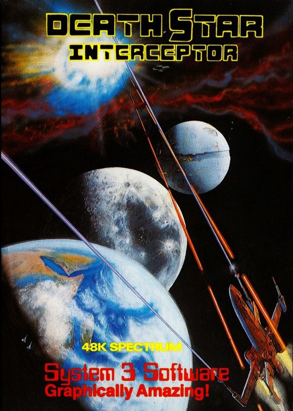
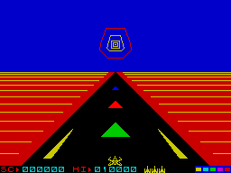
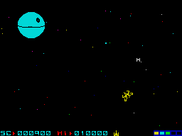

Death Star Interceptor


{kind=link}

| Publisher: | System 3 Software Ltd |
| Price: | £7.95 |
| Year: | 1985 |
| Source: | CRASH, Issue 15 |

The Encyclopaedia Galactica (AD 4020 edition of course) is almost as oft-quoted a tome of learning as is its primitive forebear the Encyclopaedia Britannica. The inlay of this new game from a company new to the Spectrum has a long quote from Galactica which, in the time-honoured tradition of cassette inlays, has suitably little to do with playing the game itself. What it does tell you is that the Death Star is approaching and threatening Earth and only one hope is left. You guessed it, sucker, that’s you, tucked safely inside Star Fighter One. No one needs to be told what a Death Star is in detail; it’s a big, round metal moon with a deep and heavily defended equatorial trench, and a single weakness, the central core vent down which an accurately placed photon missile will be able to reach the core and blow up the Death Star.

Death Star Interceptor kicks off with a very good rendition of the ‘Star Wars’ theme (the game is officially licenced) as your fighter waits at the base of the screen to be launched into space. There are three playing screens, the first is really an effect rather than a difficult game sequence. When the music finishes the computer says, ‘Prepare for launching!’ quite without the aid of a Currah Microspeech unit. You must then take off and fly the fighter through the dead centre of a series of concentric rings representing entry into hyperspace.
The second screen is set in space. Earth is seen receding on the right, leaving your fighter alone with the stars — but not for long. Some of the stars look as though they’re moving, and getting bigger — and they are. Several fighters and other types zoom towards you, weaving and spinning as they come in to the attack. You are so busy dodging their lethal blasts and blowing them to smithereens that at first you fail to notice another star getting brighter. Suddenly the point of light grows and grows until you realise it the dread Death Star itself. If you survive this screen until approach to the Death Star is concluded, you will dive down on the metal moon and into the equatorial trench.
Screen three is a 3D birds’ eye perspective view of the trench which scrolls towards you. Your fighter can move left or right as well as up and down. The sides of the trench are dotted with laser cannon, the base with fuel dumps. More tie fighters come screaming up the trench at you, and later there are laser beams ranging across its width which you must fly under or over. If you survive this section for long enough, there will be a chance to drop a photon torpedo down the rapidly approaching vent. Success will see you fly up put of the trench, and turning round, you will see the receding Death Star disintegrate in a massive explosion. But don’t worry — with one down, there are many more to come with tougher defences!
CRITICISM

Death Star comes nearer.
‘I saw this game some time ago on the CBM 64 (by the same company) and there isn’t the slightest doubt that the Spectrum version is far superior (nothing to do with petty inter-computer jealousies either). The ‘Star Wars’ theme at the start is excellently done and the speech bit isn’t bad either. The first screen is simple enough not to become too serious an irritation between games. The second screen is pretty amazing, a real fast shoot em up with astonishingly smooth 3D graphics that really do come rushing at you. The perspective effect and sense of depth has to be seen to be believed. In the trench the colours are perhaps less effective, but the saving grace is the speed and clarity of the scrolling. Death Star Interceptor (along with Incentive’s Moon Cresta) mark a new era of sophisticated shoot em ups. Great stuff!’
‘Death Star must be one of the fastest solid 3D shoot em up games yet available for the Spectrum. Once loaded, you are greeted with a glorious ‘Star Wars’ theme music — try amplifying it, it’s worth it. ‘Prepare for launching!’ as I shot through the time gate, the computer shouted. The 3D aspect of this game is truly amazing — tiny dots rapidly grow from a distance to become Tie fighters and other recognisable shapes. The speed at which this happens is breathtaking and incredibly smooth. What’s more the animation isn’t (as usual) just in one plane, but they twist from side to side as they weave across the screen towards you, showing the various different angles of their metallic make up. Moving into the trench all the usual defences are plastered on the sides, which constantly impede your progress. Tie fighters zip towards you and laser barriers cause you to duck. The inlay states that the game is graphically amazing and all too often this turns out to be untrue but in this case it is an understatement. The second screen sets a new state-of-the-art standard for 3D shoot em ups. Again, I think the second screen is the most playable and enjoyable, although very difficult to get through to progress into the trench. The third screen is also extremely difficult although I didn’t find it half as much fun as the previous one — still enjoyable though. Death Star is a game that will set new standards for 3D space shoot em ups. Terrific fun.’
‘Speed, excitement, tough gameplay and good graphics are the all-important elements of a shoot em up. Death Star has the lot. In the second screen the tactics of the enemy fighters gives the game an impetus rarely seen before. There are three different tactics in play. Some fighters (they all weave about like crazy) come from the distance at you, others spring off the sides of the screen unexpectedly, careering round to attack, while others actually leave the screen and then come rushing back on from ‘behind’ you. All the while, they are twisting and turning realistically. We have had extreme speed with Dark Star but little game — a good game with Starstrike but line graphics — now we have Death Star Interceptor with speed, great graphics and a playable game. This game will probably leave the 3D shoot em ups way behind until someone else comes up with a better game. The only boring part I found about this game was the first screen. Jumping into hyperspace became quite tiresome and irritating at the beginning of each new game, but then again, you have to start from somewhere. Overall, one of the best space shoot em up games in 3D ever.’
COMMENTS
| Control keys: | A/Q up/down (aircraft type) O/P left/right and CAPS to V to fire. These are preset, but board user-definable |
| Joystick: | Kempston, Sinclair 2, Cursor type |
| Keyboard play: | Very responsive |
| Use of colour: | A bit limited on the trench screen, but excellent everywhere else |
| Graphics: | Amazing, fast, smooth 3D and with good explosion effects |
| Sound: | Excellent tune, spot effects |
| Skill levels: | 3 — space cadet to commander |
| Lives: | 3 plus shields — loss of shield with each 5 hits and there are 5 shields (you’ll need em) |
| Screens: | 3 |
| Special features: | Unaided speech at start |
| General rating: | An excellent, addictive and attractive shoot em up requiring speedy reflexes. Good value for money. |
| Use of Computer: | 91% |
| Graphics: | 95% |
| Playability: | 95% |
| Getting started: | 92% |
| Addictiveness: | 88% |
| Value For Money: | 87% |
| Overall: | 92% |